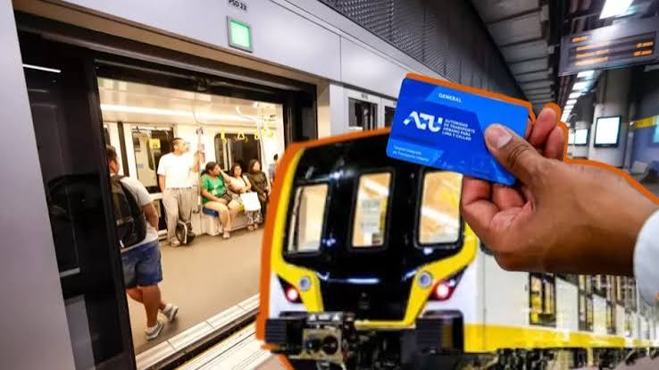
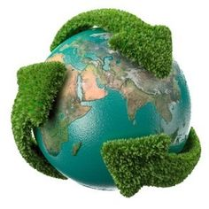
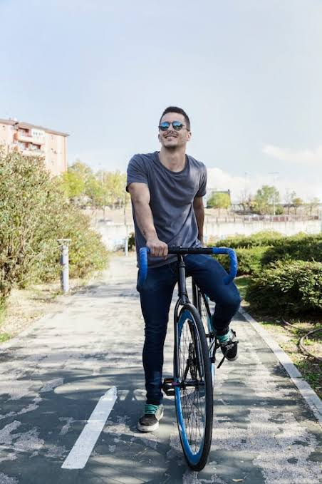
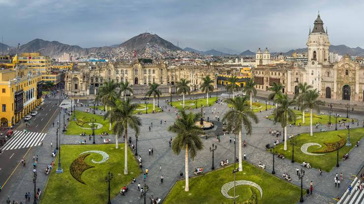
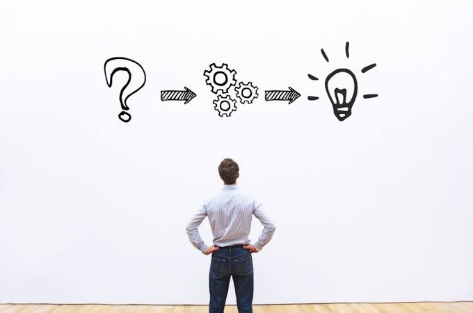
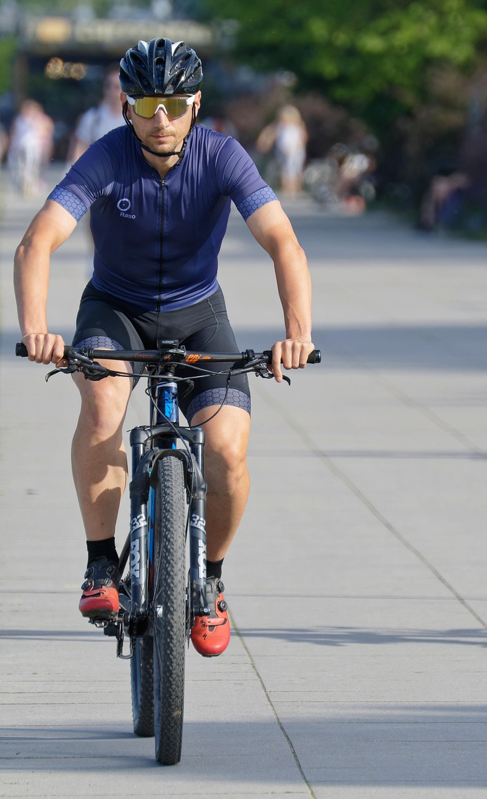
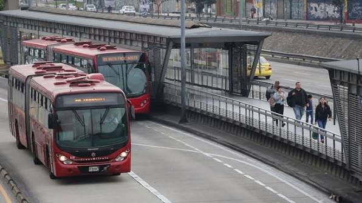

Muévete por la ciudad
Descubre alternativas de transporte sostenible para tus recorridos diarios de larga distancia.


Muévete de forma inteligente, viaja de forma sostenible.
Descubre alternativas de transporte sostenible para tus recorridos diarios de larga distancia.

Conoce cómo usar bicicleta en trayectos cortos ayuda a reducir el impacto ambiental.

Promovemos caminar en distancias cercanas para desplazarnos mejor por la ciudad.

Somos EcoMetro, un proyecto dedicado a promover la movilidad sostenible y el cuidado del medioambiente.
Buscamos fomentar hábitos responsables de transporte para construir ciudades más limpias y sostenibles.
Ofrecemos información y alternativas para mejorar la movilidad urbana de manera sostenible:
Rutas, horarios y consejos para aprovechar la red pública masiva.
Guías e infraestructura segura para ciclistas urbanos.
Hábitos sencillos para disminuir las emisiones diarias de carbono.
Asesoramiento para mejorar tus hábitos de desplazamiento diarios.
Actualmente, muchas ciudades enfrentan problemas de contaminación ambiental debido al uso excesivo de vehículos particulares.
El tráfico, las emisiones contaminantes y el consumo de combustible afectan la calidad del aire y el medioambiente.

Completa tu distancia diaria y frecuencia semanal para estimar tu ahorro de emisiones:
¿Qué alternativa utilizarías para calcular tu impacto?

Utilizar bicicleta permite desplazarte sin generar emisiones directas por combustible.

Compartir el transporte ayuda a disminuir la cantidad de vehículos particulares en las calles.
Para distancias cortas, caminar es una alternativa saludable y sostenible.
Ingresa tus kilómetros, selecciona los días y elige una opción del Paso 3 para evaluar el impacto de tu decisión.
Conoce la importancia de cuidar el medioambiente y elegir medios de transporte responsables.
Desarrollamos iniciativas que buscan mejorar la movilidad y promover el cuidado ambiental.
"Utilizar medios de transporte sostenibles ayuda a cuidar nuestro planeta."
"Pequeñas decisiones pueden generar grandes cambios en nuestra ciudad."
¿Quieres conocer más sobre EcoMetro o recibir orientación? Completa el formulario:
Correo directo: contacto@ecometro.com